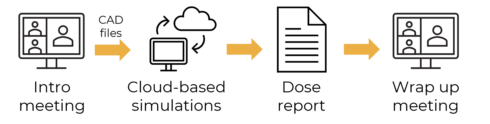

Virtual dose mapping as a service
This is a virtual dose map
A syringe is a simple medical device; how hard could it be to sterilize it?
Look at the virtual dose maps below to see how the dose distribution changes depending on if the beam is parallel or perpendicular to the syringe barrel.
Virtual dose mapping can unlock a 30% reduction in the DUR by identifying the optimum device orientation without any experimentation.
Here's how virtual dose mapping with Dose Insight works:
We typically kick it off with an introductory meeting to review and understands your goals. This helps us be aligned to ensure we can deliver you the most value.
Once we get the inputs we need, we then run our validated virtual dose mapping simulations. This means there are no hardware requirements when working with Dose Insight to perform virtual dose mapping. No investment in an expensive compute cluster necessary!
Finally, we provide you with a dose report and a wrap up meeting to go over your results. The dose report contains a lot of information, such as:
- 3D virtual dose map
- Minimum dose
- Maximum dose
- Dose Uniformity Ratio (DUR)
- Location of the minimum dose
- Location of the maximum dose
We spend a lot of time looking at virtual dose maps, so we leverage our expertise to distill the rich information contained in a virtual dose map to the essentials that you need to make a business decision.
Please contact us for an example dose report.
White glove services
Dose Insight offers a menu of fixed-price, fixed-scope services for radiation sterilization.
The deliverable from each of these services full dose report with all the information outlined above.
Virtual dose map of an isolated device
A virtual dose map study of a single, isolated device to identify locations of min/max dose and DUR
Optimization of device orientation relative to beam
Virtual dose maps from 3 different beam directions so you can identify the orientation with the best DUR
Compare multiple design choices
Compare the virtual dose maps delivered to two different design choices, such as device designs, packaging designs, or shipping box packing configurations
Penetration study
Optimize your throughput with a systematic study of the number of shipping boxes that can be penetrated with different beam directions
Dosimeter placement
Go into sterilization validation with confidence with this service, where we identify the location of min/max dose, as well as locations of low dose gradients, which are ideal for dosimeter placement for dose mapping
Radiation technology comparison
Compare the dose map produced by e-beam, X-ray, and gamma sterilization to help you choose the right radiation technology for your device.
Comparison with measured dose maps
Gain confidence in virtual dose mapping by comparing measured dosimeter dose with simulated dosimeter dose extracted from a virtual dose map
Bespoke services
If you are looking for something other than the services listed above, please get in touch so we can work together to define a custom project to meet your needs.